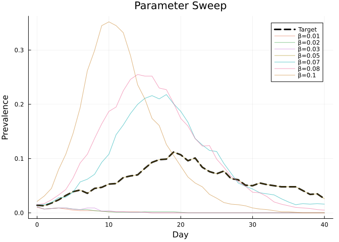
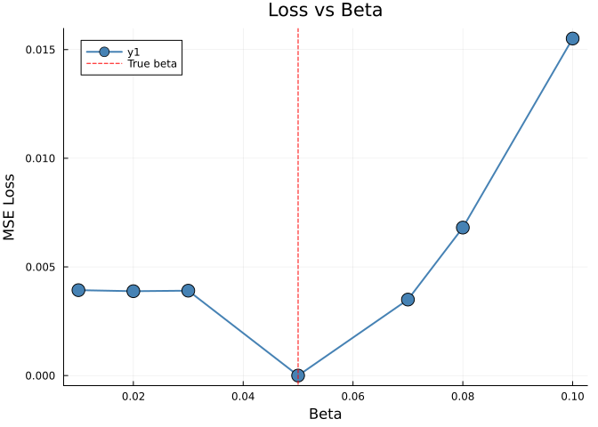
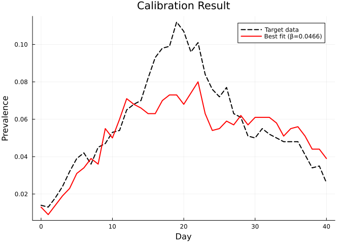
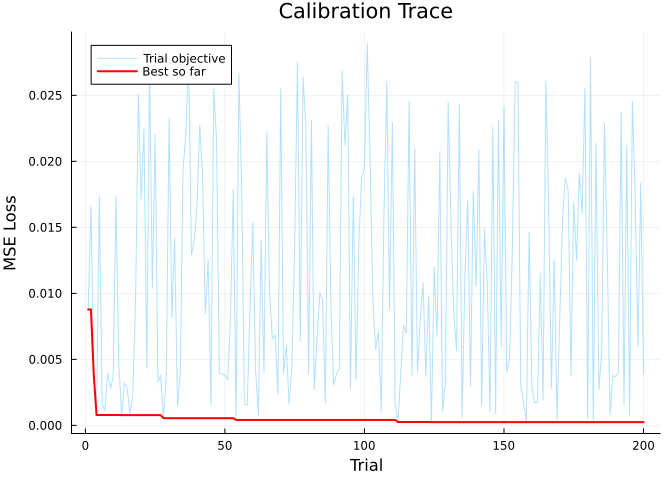

Calibration: Fitting Models to Data
Simon Frost
- Overview
- Generate synthetic target data
- Manual parameter sweep
- Loss landscape
- Automated calibration
- Best fit visualization
- Optimization trace
- Summary
Overview
Model calibration adjusts simulation parameters to match observed data. Starsim.jl provides a Calibration framework with:
CalibPar— parameter specifications with boundsCalibComponent— likelihood/loss components linking sim results to data- Random search optimization (with AD-gradient pathway planned)
Generate synthetic target data
First, we generate “truth” by running a simulation with known parameters.
using Starsim
using Plots
n_contacts = 10
beta = 0.5 / n_contacts # = 0.05
true_sim = Sim(
n_agents = 1_000,
networks = RandomNet(n_contacts=n_contacts),
diseases = SIR(beta=beta, dur_inf=4.0, init_prev=0.01),
dt = 1.0,
stop = 40.0,
rand_seed = 42,
verbose = 0,
)
run!(true_sim)
target_prev = get_result(true_sim, :sir, :prevalence)
println("True beta: 0.05")
println("Peak prevalence: $(round(maximum(target_prev), digits=4))")True beta: 0.05
Peak prevalence: 0.112Manual parameter sweep
Before automated calibration, let’s see how different beta values compare.
betas = [0.01, 0.02, 0.03, 0.05, 0.07, 0.08, 0.10]
losses = Float64[]
tvec = 0:length(target_prev)-1
p = plot(tvec, target_prev, lw=3, color=:black, ls=:dash, label="Target",
xlabel="Day", ylabel="Prevalence", title="Parameter Sweep")
for beta in betas
sim = Sim(
n_agents = 1_000,
networks = RandomNet(n_contacts=n_contacts),
diseases = SIR(beta=beta, dur_inf=4.0, init_prev=0.01),
dt = 1.0, stop = 40.0, rand_seed = 42, verbose = 0,
)
run!(sim)
prev = get_result(sim, :sir, :prevalence)
n = min(length(prev), length(target_prev))
mse = sum((prev[1:n] .- target_prev[1:n]).^2) / n
push!(losses, mse)
plot!(p, tvec[1:n], prev[1:n], alpha=0.6, label="β=$beta")
end
p
Loss landscape
plot(betas, losses, marker=:circle, lw=2, color=:steelblue, markersize=8,
xlabel="Beta", ylabel="MSE Loss", title="Loss vs Beta")
vline!([0.05], color=:red, ls=:dash, label="True beta")
Automated calibration
calib = Calibration(
sim = Sim(
n_agents = 1_000,
networks = RandomNet(n_contacts=n_contacts),
diseases = SIR(beta=beta, dur_inf=4.0, init_prev=0.01),
dt = 1.0, stop = 40.0, rand_seed = 42, verbose = 0,
),
calib_pars = [
CalibPar(:beta; low=0.01, high=0.15, module_name=:sir),
],
components = [
CalibComponent(:prev;
target_data = Float64.(target_prev),
sim_result = :prevalence,
disease_name = :sir,
),
],
n_trials = 200,
)
run!(calib; verbose=1)Starting calibration (200 trials, 1 parameters)
Calibration complete. Best objective: 0.000245
Best parameters: Dict(:beta => 0.046577743097509505)
Calibration(1 pars, 1 components, 200 trials, complete (obj=0.0002))Best fit visualization
best_sim = Sim(
n_agents = 1_000,
networks = RandomNet(n_contacts=n_contacts),
diseases = SIR(beta=calib.best_pars[:beta], dur_inf=4.0, init_prev=0.01),
dt = 1.0, stop = 40.0, rand_seed = 42, verbose = 0,
)
run!(best_sim)
best_prev = get_result(best_sim, :sir, :prevalence)
n = min(length(best_prev), length(target_prev))
plot(0:n-1, target_prev[1:n], lw=2, color=:black, ls=:dash, label="Target data")
plot!(0:n-1, best_prev[1:n], lw=2, color=:red,
label="Best fit (β=$(round(calib.best_pars[:beta], digits=4)))")
xlabel!("Day")
ylabel!("Prevalence")
title!("Calibration Result")
Optimization trace
trial_objs = [obj for (_, obj) in calib.trial_history]
best_so_far = accumulate(min, trial_objs)
plot(1:length(trial_objs), trial_objs, alpha=0.3, label="Trial objective",
xlabel="Trial", ylabel="MSE Loss", title="Calibration Trace")
plot!(1:length(best_so_far), best_so_far, lw=2, color=:red, label="Best so far")
Summary
- Calibration fits model parameters to observed data by minimizing a loss function
CalibParspecifies parameter bounds;CalibComponentlinks simulation results to target data- Random search explores the parameter space efficiently for low-dimensional problems
- The best-fit beta closely recovers the true value used to generate the target data
- Future: AD-gradient calibration via
ForwardDiff.jlfor higher-dimensional parameter spaces